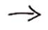

Spielregeln
Auf dieser Seite werden die Spielregeln erläutert. Wenn du dich mit den Regeln vertraut gemacht hast, kannst du
dich umgehend über den Link 'Registrieren' auf der rechten Seite für das EM-Tippspiel registieren. Wir brauchen
deinen kompletten Namen, deine E-Mail Adresse und wie du auf dieses Tippspiel gekommen bist. Sobald dieser Vorgang
erfolgreich abgeschlossen ist, kannst du dich einloggen und deine Tipps erfassen.
Auf der 'Tipps erfassen' Seite siehst du sämtliche Vorrundenspiele wie auch Auswahlboxen für die Viertelfinal-,
Halbfinal- und Finalteilnehmer. Zum Schluss musst du natürlich auch noch deinen Europameister auswählen. Deine
Resultattipps für die Vorrundenspiele musst du jeweils bis spätestens 1 Minute vor Spielbeginn erfasst
und gespeichert haben. Ansonsten gibt es 0 Punkte für dieses Spiel. Die Teilnehmernationen ab den Vorrundenspielen
musst du allesamt bis 1 Minute vor dem Eröffnungsspiel vom 7. Juni erfasst haben. Diese kannst du ab dann nicht mehr verändern.
Punktevergabe - Vorrundentipps
- 5 Punkte  korrekter Resultattipp und der richtige Sieger bzw. untentschieden (du tippst 2:1 und das Spiel endet 2:1)
- 4 Punkte richtiger Sieger bzw. unentschieden mit der korrekten Tordifferenz (du tippst 2:1, aber das Spiel endet 1:0)
- 3 Punkte richtiger Sieger mit falscher Tordifferenz (du tippst 2:1, aber das Spiel endet 2:0)
- 0 Punkte falscher Sieger (du tippst 2:1, aber das Spiel endet 1:2)
Punktevergabe - Teilnehmer ab Viertelfinal
- 6 Punkte pro korrekt getipptest Viertelfinal-Teilnehmer-Team
- 7 Punkte pro korrekt getipptest Halbfinal-Teilnehmer-Team
- 8 Punkte pro korrekt getipptest Final-Teilnehmer-Team
- 10 Punkte für den richtigen Europameister
Damit du allfällig benötigte Gedankenanstösse zur Hilfe beiziehen kannst oder mit anderen Teilnehmer über die abgegebenen Tipps fachsimpeln
kannst, werden sämtliche Tipps von den Teilnehmern für alle angemeldeten Mitspieler ersichtlich sein. Der andere Grund für dieses Vorhaben
ist der, dass es so auch uns Organisatoren möglich ist an diesem Spiel teilzunehmen.
Wir werden uns bemühen, so rasch als möglich nach Spielende einer Partie die aktualisierte Tabelle aufzuschalten, damit auch engagiert
mitgefiebert werden kann. Sobald du auf unserer Startseite den Newseintrag von einem Update siehst, ist auch der neueste Zwischenstand
unter dem Menüpunkt 'Aktuelle Rangliste' ersichtlich. Die Viertelfinal-Teilnehmer werden erst nach Beendigung sämtlicher Vorrundenspiele
aktualisiert und in der Zwischenstand-Tabelle berücksichtigt.
Auszahlungsstruktur
- 1. Platz der Sieger des EM-Tippspieles erhält 50% des gesamten Pots.
- 2. Platz der Zweitplatzierte des EM-Tippspiels darf sich über 30% des gesamten Pots erfreuen.
- 3. Platz der Drittplatzierte des EM-Tippspiels muss sich mit 20% des gesamten Pots abfinden.
Damit überhaupt ein Pot zustande kommt, muss jeder Teilnehmer Fr. 20.-- bezahlen. Solange ein Teilnehmer nicht bezahlt hat, wird dieser
speziell markiert auf der Zwischenstand Seite. Wer bis am 15. Juni 2008 noch nicht bezahlt hat, wird vom EM-Tippspiel ausgeschlossen.
Nun weisst du alles, was es über das EM-Tippspiel zu wissen gibt. Folgende drei Dinge solltest du nun unternehmen:
- Dich registrieren.
- Das Tippspiel bei Bekannten, Freunden, Nachbarn etc. bekannt machen.
- Deinen Einsatz von Fr. 20.-- einem von uns, einem der uns kennt oder über wieviele Ecken auch immer das Geld zu uns gelangt, bezahlen.
PS: Die männliche Form wurde der Einfachheit halber verwendet und soll in keinster Art und Weise diskriminierend wirken.